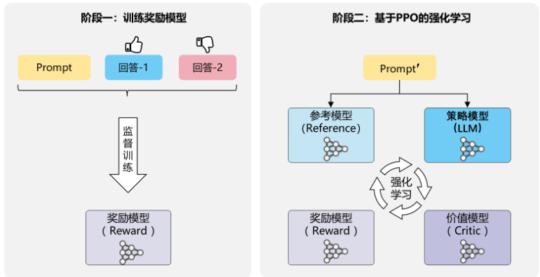
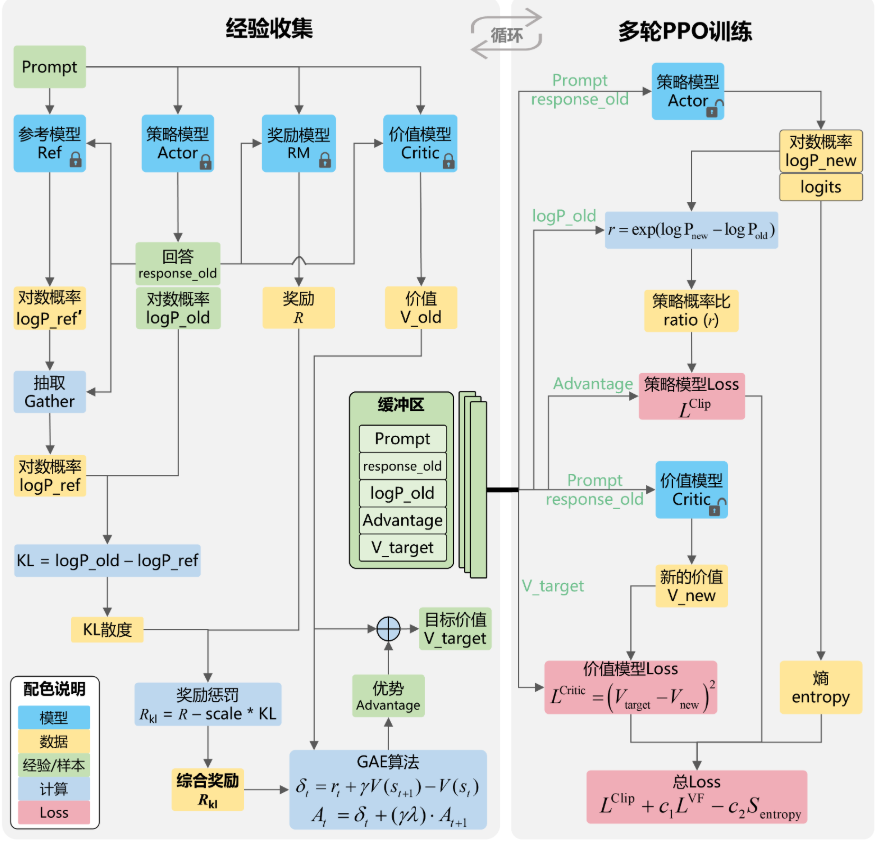

强化学习 · 学习报告
〇、源文件
主体对照 强化学习.md（MDP、动态规划、TD、DQN、策略梯度、PPO）；扩展对照 LLM&RL.md（RLHF 四模型与 PPO 训练流）。插图路径由笔记中绝对路径改为相对 ../../picture/、../../pictures/，便于与仓库内资源一致部署。

一、MDP 五元组与轨迹概率
\(\langle\mathcal{S},\mathcal{A},\mathcal{P},r,\gamma\rangle\)，策略 \(\pi(a\mid s)\)，轨迹 \(\tau\) 的概率为初始分布与逐步 \(\pi\) 与转移的乘积（强化学习.md）。
二、马尔可夫性与折扣回报
三、MRP 与贝尔曼（无动作）
四、\(V^\pi\)、\(Q^\pi\) 与贝尔曼期望方程
五、贝尔曼最优方程
六、动态规划：策略迭代与价值迭代
模型已知时：策略评估反复用贝尔曼期望方程迭代至 \(\|V^{k+1}-V^k\|\) 小；策略改进 \(\pi'(s)=\arg\max_a Q^\pi(s,a)\)。价值迭代直接在贝尔曼最优上做同步更新，收敛后从 \(V^*\) 恢复贪心策略（强化学习.md）。
七、时序差分：SARSA 与 Q-learning
SARSA 在线（on-policy），用五元组 \((s,a,r,s',a')\) 更新。Q-learning 用 \(\max_{a'}Q(s',a')\) 构造目标，典型为 off-policy（行为策略 \(\epsilon\)-贪婪，目标策略贪心）。
八、深度 Q 网络（DQN）
用神经网络逼近 \(Q(s,a;\theta)\)；经验回放打破样本相关性；目标网络 \(\theta^-\) 定期同步稳定 TD 目标。损失常为 Huber 或 MSE 作用于 TD 误差（强化学习.md）。
九、策略梯度与 PPO
策略梯度定理将 \(\nabla_\theta J\) 表为优势加权对数策略梯度；引入 baseline 减方差。PPO-Clip 限制重要性比 \(\rho_t=\pi_\theta/\pi_{\theta_{\mathrm{old}}}\) 偏离 1 的幅度；PPO-Penalty 将 KL 作为惩罚项。多 epoch 小批次复用同批轨迹提高样本效率（强化学习.md）。
十、LLM 中的 RL：对象与 RLHF 流程
对照 LLM&RL.md：动作=词表 token；状态=上下文；策略=LM 参数。RLHF 两阶段：偏好数据训练奖励模型；再以 PPO 联合策略、冻结参考模型、奖励模型、价值模型，并用 KL 将策略锚在 SFT 分布附近。

| 模型 | 输入 | 输出（要点） |
|---|---|---|
| 策略 Actor | Prompt | 生成 token / 对数概率，训练中更新 |
| 参考 Reference | Prompt + 回答 | 对数概率，冻结，用于 KL |
| 奖励 RM | Prompt + 回答 | 偏好分数（常取末 token） |
| 价值 Critic | Prompt + 回答 | 状态–动作价值估计 \(V_t\) |
若本地无 md/pictures/*.png，上图可能裂图；可将资源拷入该目录或改为你机器上的实际相对路径。
